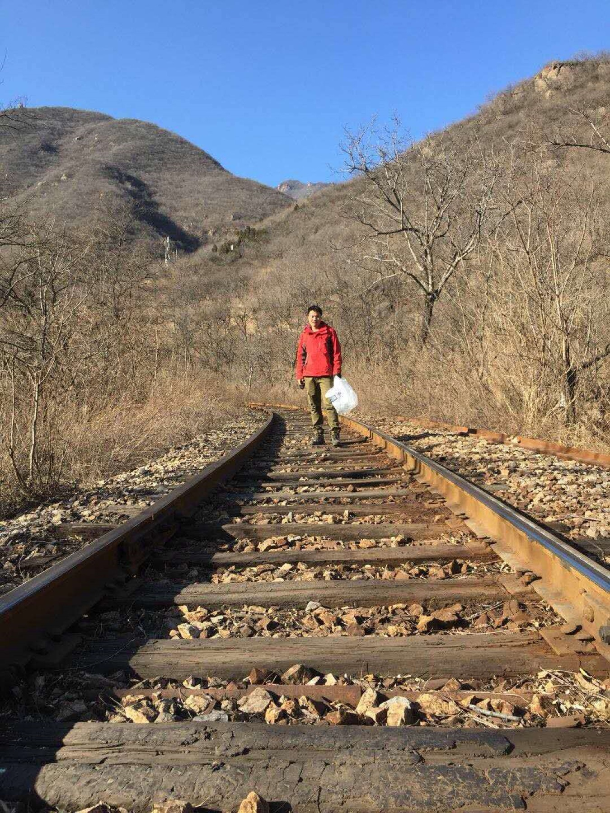
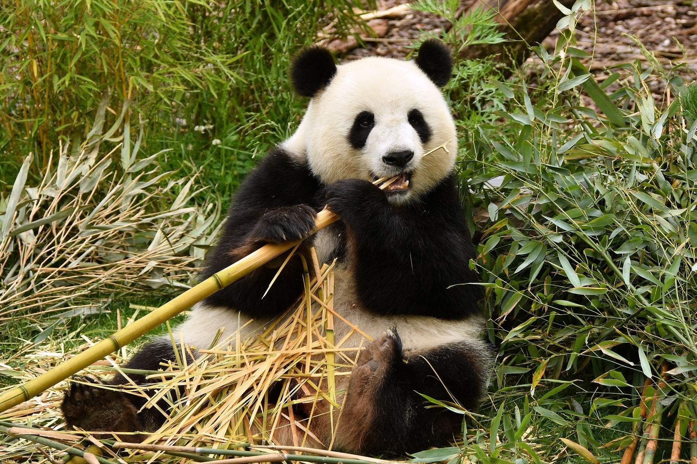
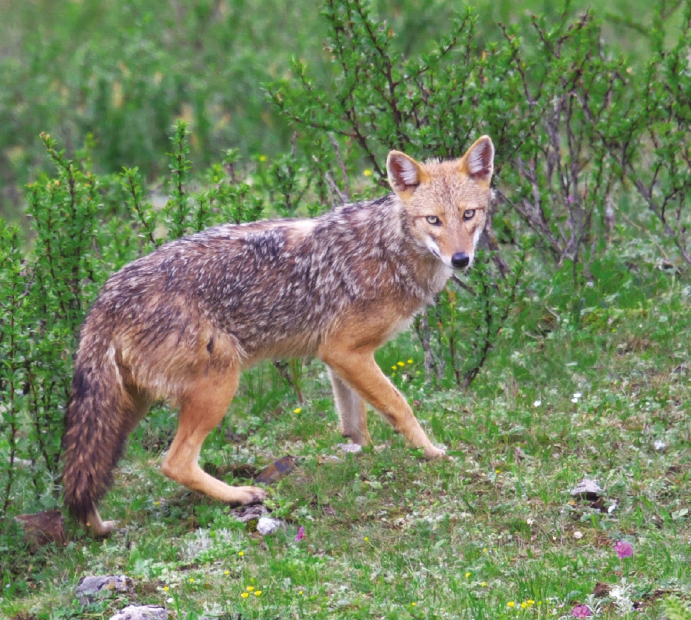
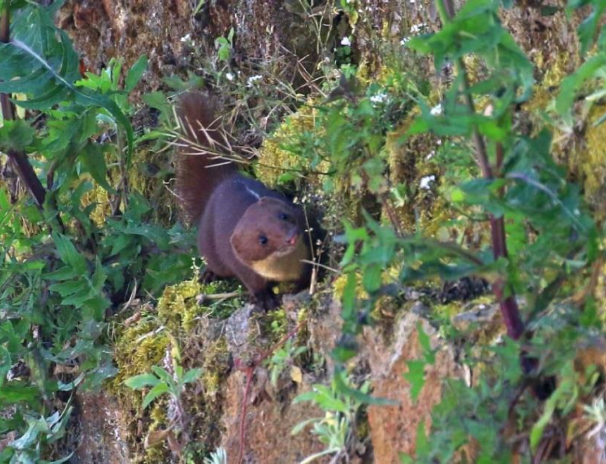
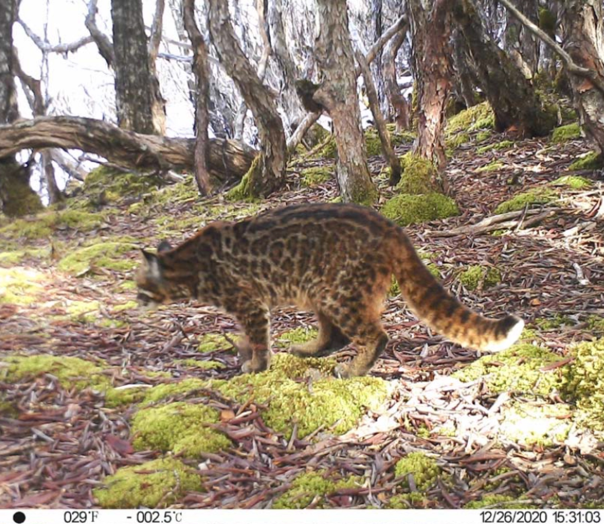
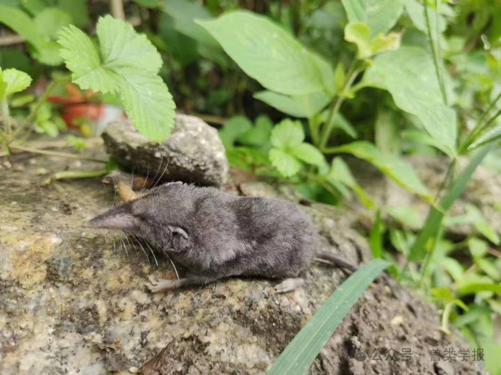
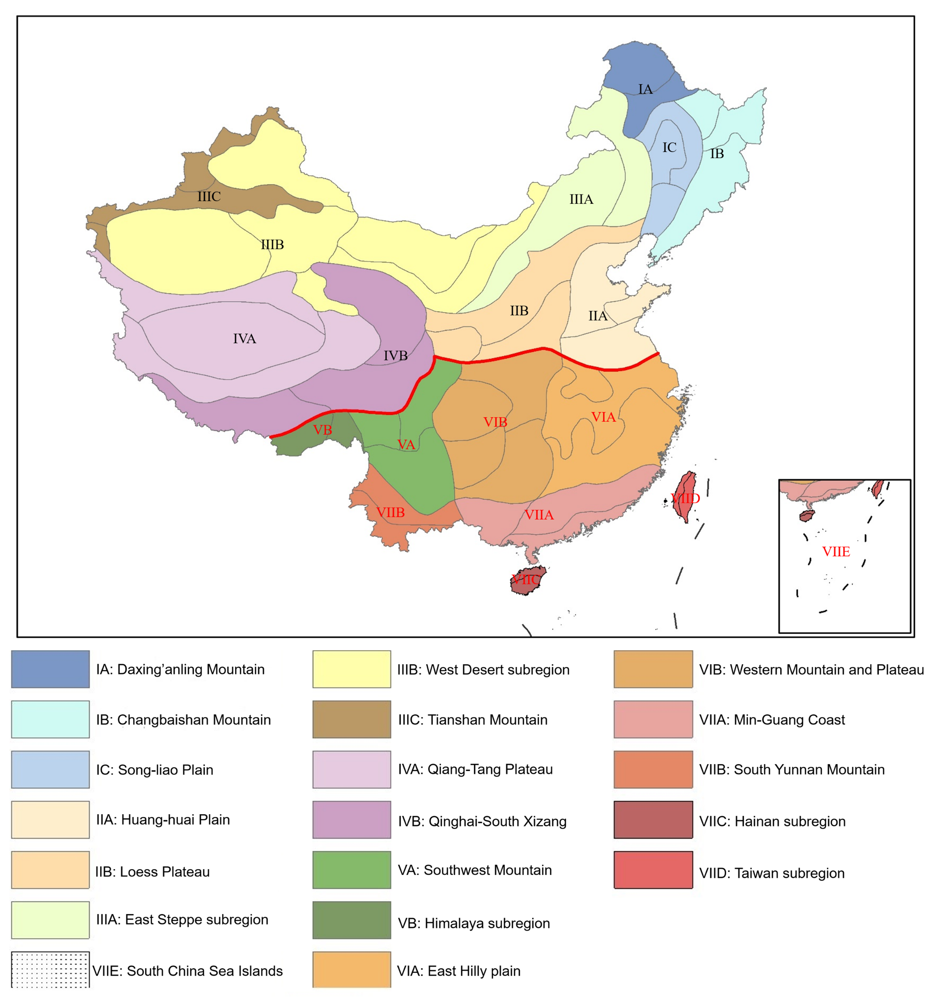
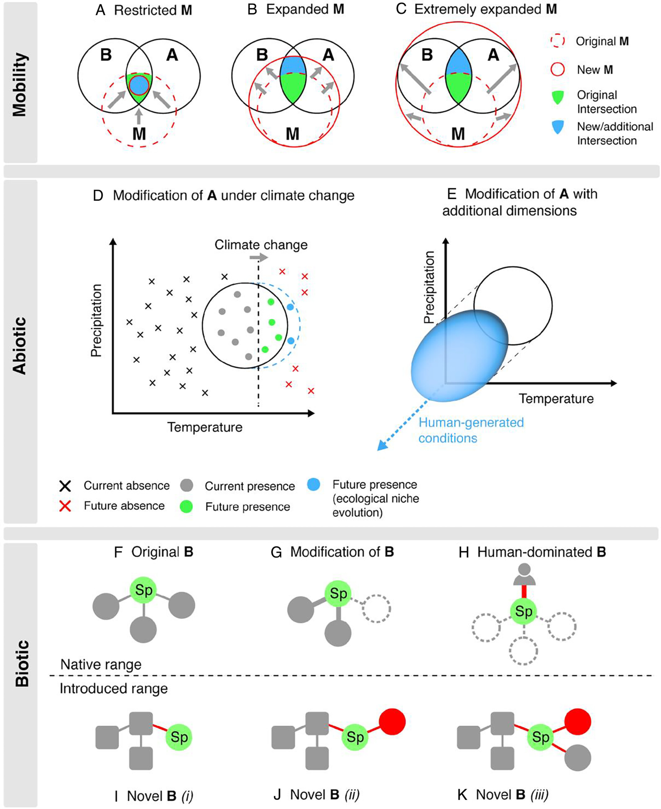
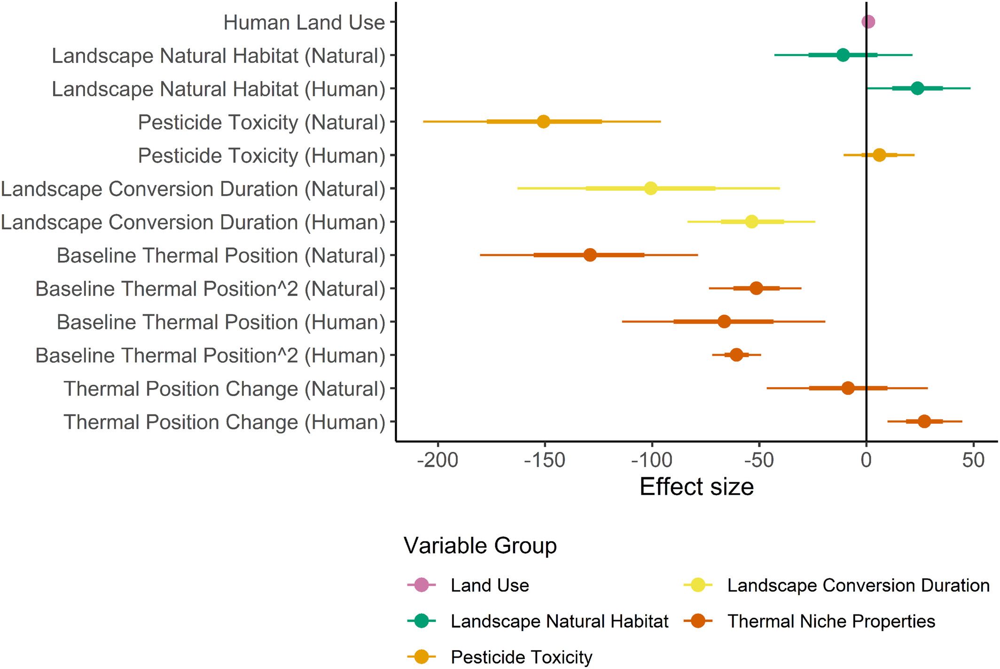
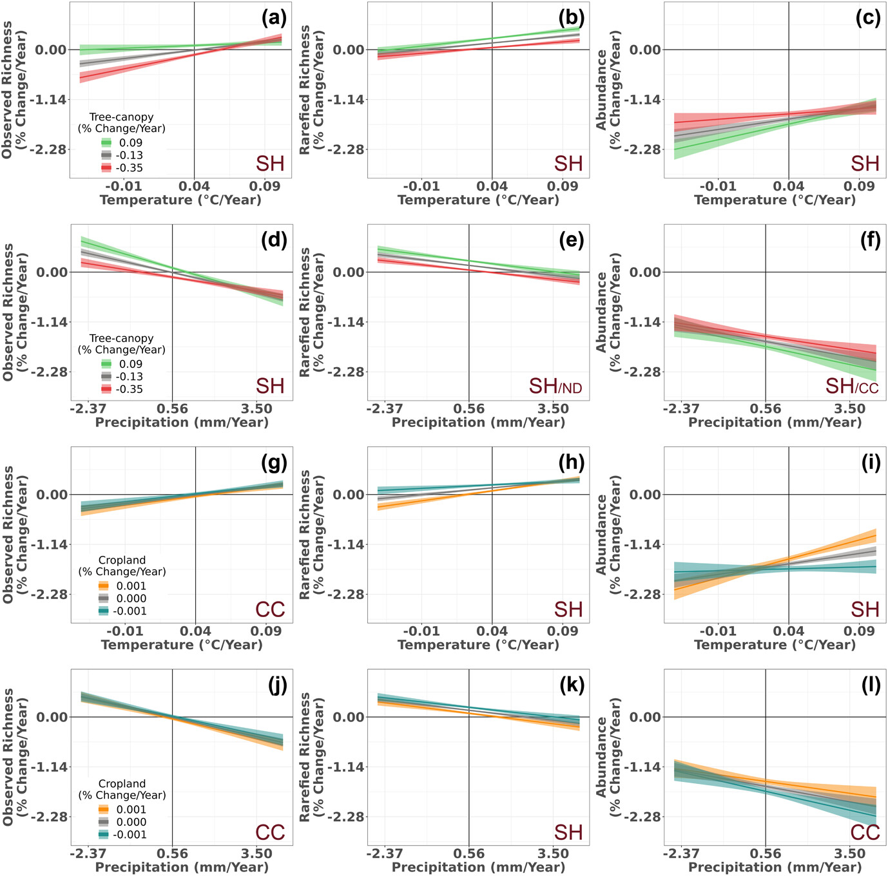

野外调查与监测
长期开展山地、森林与高原区域野外调查，积累了哺乳动物与鸟类多源监测数据。

Academic Profile
我目前在北京大学与 IIASA 开展联合博士后研究，聚焦全球变化生物学、保护生物学与生物地理学。 研究重点是气候变化与土地利用变化对生物多样性的联合作用机制， 以及物种分布动态、新纪录形成机制、灭绝风险评估与保护优先网络优化。
我的研究以“生态过程 + 观测过程”的多尺度耦合为核心，结合野外调查、红外相机监测、 物种 trait 数据与宏尺度模型，系统识别生物多样性变化的关键驱动因素。 当前重点推进中国陆生脊椎动物新纪录发生机制、干旱区鸟类热浪脆弱性评估、 以及面向保护实践的优先区与监测网络优化。
长期开展山地、森林与高原区域野外调查，积累了哺乳动物与鸟类多源监测数据。

围绕新纪录发现、区系格局与分布边界变化，推进多类群时空分布数据库建设。

将统计模型和机制框架用于评估气候-土地利用复合胁迫，并服务保护优先策略制定。
以下图像均来自你提供的最新汇报材料与研究文件，已优先采用你本人 work 的照片与图表。
















蒋志刚; 周开亚; 何锴; 丁晨晨; 胡一鸣; 黄乘明; Alice C. Hughes; 姜廷磊; 姜广顺; 李春旺; 李晟; 刘洋; 石红艳; 王旭明; 余文华; 张礼标. (2024) 《中国哺乳动物多样性：编目、分布与保护》，海峡出版社。
北京市自然科学基金青年项目（主持）
2026 - 2028